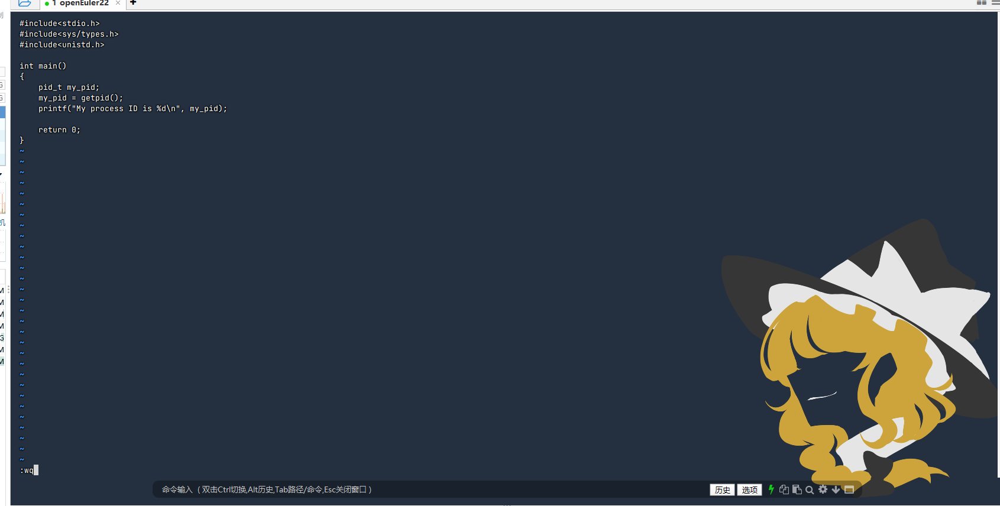
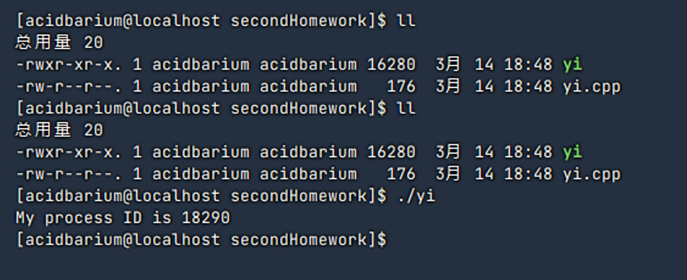
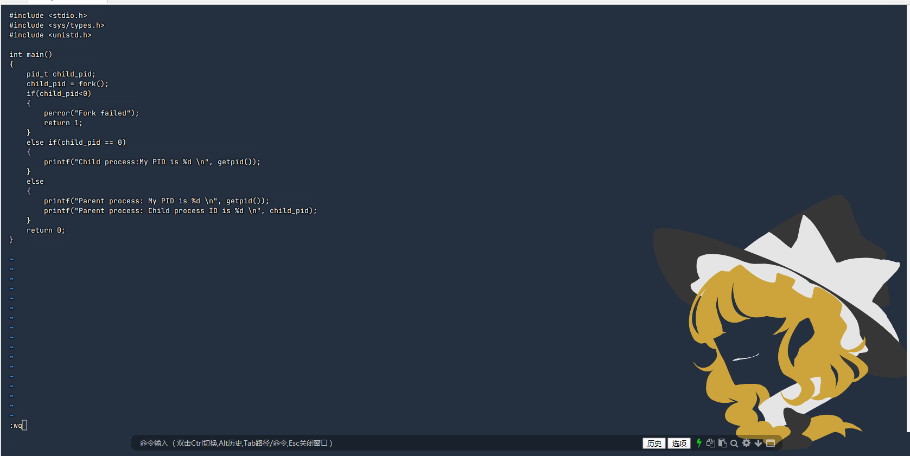
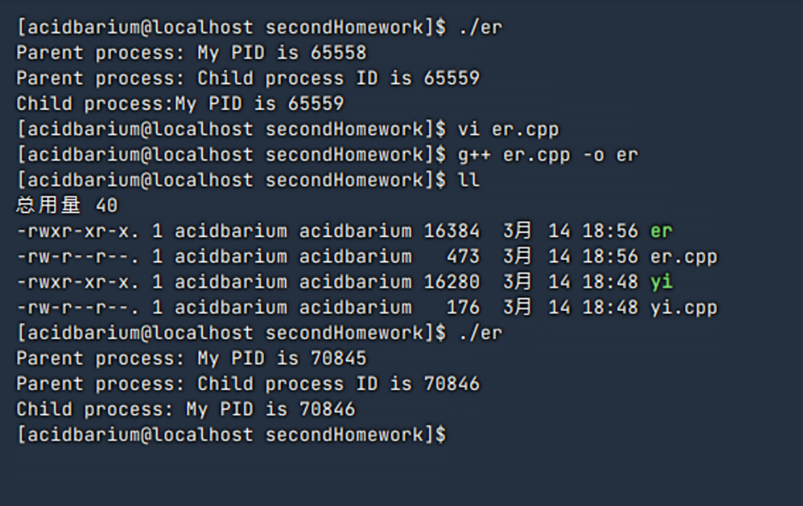
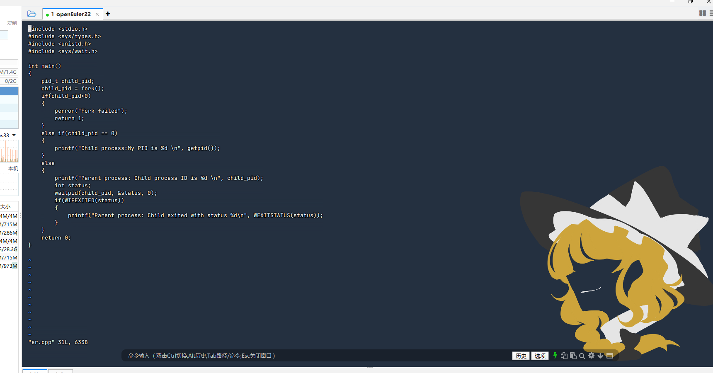
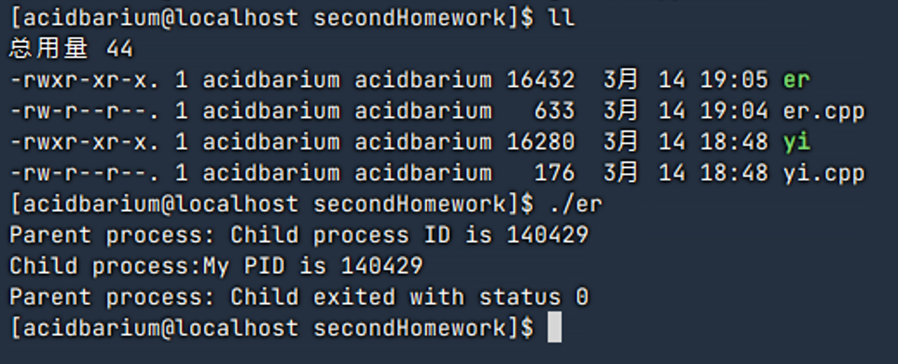
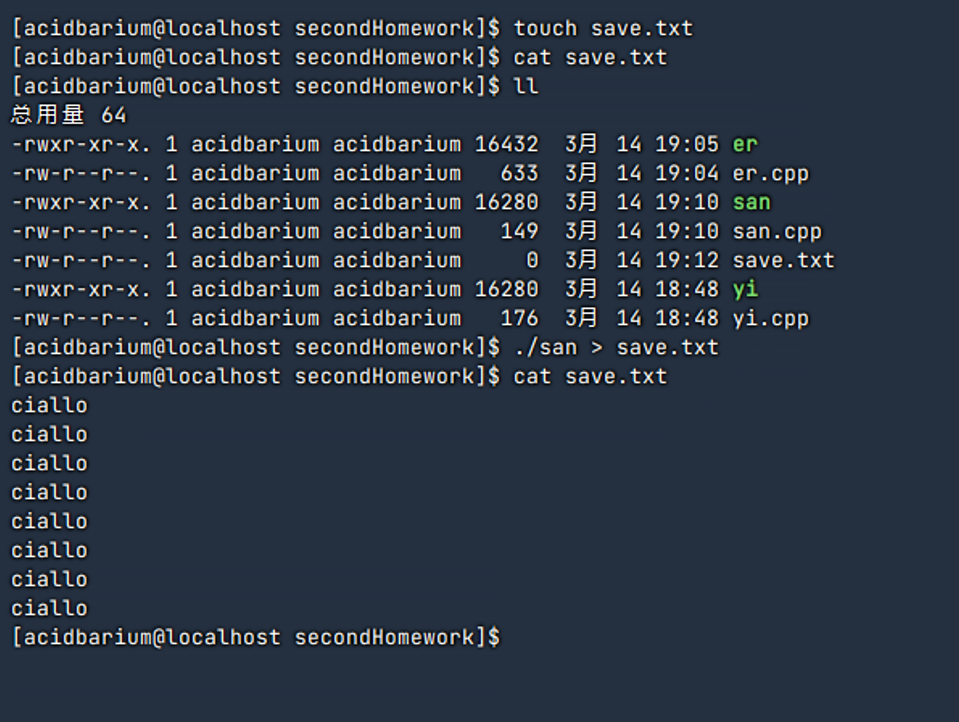
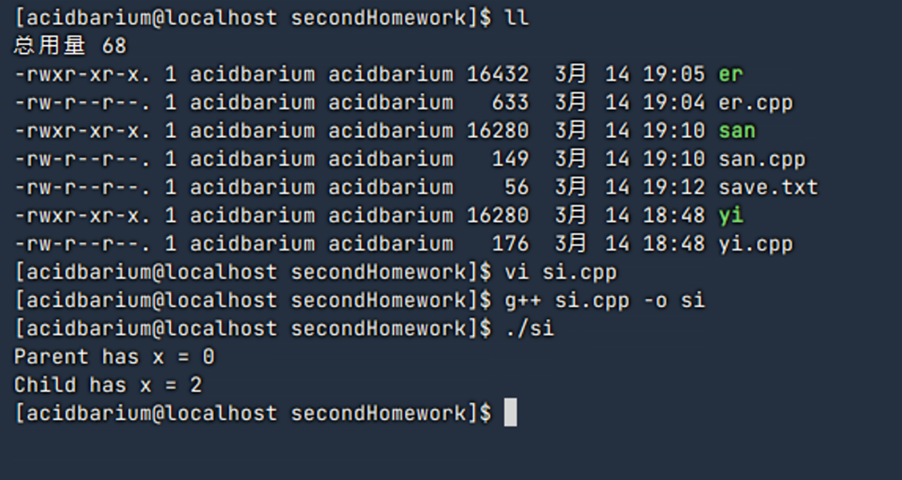

| 姓名 | 班级 | 学号 |
|---|---|---|
| 刘晨旭 | 软件2306 | 20232241110 |
打开虚拟机，输入以下指令来编写代码
vi yi.cpp
在 yi.cpp 中写入如下代码：
#include<stdio.h>
#include<sys/types.h>
#include<unistd.h>
int main()
{
pid_t my_pid;
my_pid = getpid();
printf("My process ID is %d\n", my_pid);
return 0;
}
如下图所示

编译代码：
g++ yi.cpp -o yi
运行程序：
./yi
结果如下图所示

My process ID is 18290
由此可见，当前程序的进程号（PID）为 18290。
使用以下命令创建并编辑文件 er.cpp：
vi er.cpp
编写代码如下
#include <stdio.h>
#include <sys/types.h>
#include <unistd.h>
int main()
{
pid_t child_pid;
child_pid = fork();
if (child_pid < 0)
{
perror("Fork failed");
return 1;
}
else if (child_pid == 0)
{
printf("Child process:My PID is %d \n", getpid());
}
else
{
printf("Parent process: My PID is %d \n", getpid());
printf("Parent process: Child process ID is %d \n", child_pid);
}
return 0;
}
如图

编译代码：
g++ er.cpp -o er
运行程序：
./er
得到的结果如下图所示

Parent process: My PID is 70845
Parent process: Child process ID is 70846
Child process:My PID is 70846
实验结果表明：
fork() 系统调用成功后，会产生一个子进程。修改er.cpp中的代码
vi er.cpp
修改为下面的代码
#include <stdio.h>
#include <sys/types.h>
#include <unistd.h>
#include <sys/wait.h>
int main()
{
pid_t child_pid;
child_pid = fork();
if (child_pid < 0)
{
perror("Fork failed");
return 1;
}
else if (child_pid == 0)
{
printf("Child process:My PID is %d \n", getpid());
}
else
{
printf("Parent process: Child process ID is %d \n", child_pid);
int status;
waitpid(child_pid, &status, 0);
if (WIFEXITED(status))
{
printf("Parent process: Child exited with status %d\n", WEXITSTATUS(status));
}
}
return 0;
}
如图所示

再次编译代码并运行
g++ er.cpp -o er
./er
得到结果如下

Parent process: Child process ID is 140429
Child process:My PID is 140429
Parent process: Child exited with status 0
实验结果显示：
waitpid() 后进入等待状态，直至子进程退出后才继续执行后续代码。WIFEXITED 与 WEXITSTATUS 检查子进程的退出状态。编写代码如下
#include<stdio.h>
#include<sys/types.h>
#include<unistd.h>
int main()
{
fork();
fork();
fork();
printf("ciallo\n");
return 0;
}
创建一个用来保存结果的文件save.txt
touch save.txt
编译代码并将运行的结果导入到save.txt
g++ san.cpp -o san
./san > save.txt
打开save.txt，发现结果如下图所示

结果表明：每次调用 fork() 后，当前进程都会复制出一个新的进程。
fork() 后：2 个进程fork() 后：每个进程又复制出一个子进程，总数达到 4 个fork() 后：总数达到 个进程ciallo，验证了进程复制的倍增效果。编写代码如下
#include <stdio.h>
#include <sys/types.h>
#include <unistd.h>
#include <stdlib.h>
int main()
{
int x = 1;
pid_t p = fork();
if (p < 0)
{
perror("fork fail");
exit(1);
}
else if (p == 0)
printf("Child has x = %d \n", ++x);
else
printf("Parent has x = %d\n", --x);
return 0;
}
编译并运行得到结果如下

Parent has x = 0
Child has x = 2
实验结果表明，父子进程在 fork() 调用后拥有各自独立的内存空间。
x 执行自减操作，输出结果为 0；x 执行自增操作，输出结果为 2。通过多个实例验证了 Linux 系统中进程创建的基本原理与特点：